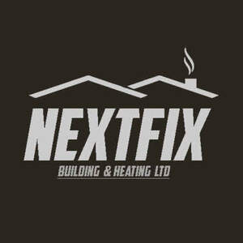
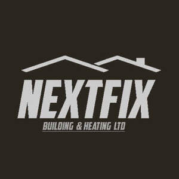

Trade Mark Journal No.2026/005 30 January 2026
UK00004322139 11 January 2026 (37)
Mark 1

Mark 2

- Class 37
- Construction; Building construction; Scaffolding construction; Building, construction and demolition; Construction of buildings; Buildings (Construction of -); Industrial construction; Infrastructure construction; Residential construction; Supervision (Building construction -); Building construction supervision; Supervision of building construction; Pipeline construction; Insulation construction; Building construction and demolition services; Construction of tunnels; Construction of bridges; Erection of formwork for building and construction; Construction supervision of buildings; Building construction and repair; Construction of pipelines; Construction of property; Construction of dams; Commercial construction; Construction of factories; Building construction consultancy; Pipeline construction and maintenance; Construction of roads; Building and construction services; Building construction services; Construction supervision; Supervision of construction; Custom building construction; Erection of scaffolding for building and construction; Road construction; Factory construction; Offshore construction; Underwater building and construction; Construction of walls; Construction of houses; Buildings (Waterproofing of -) during construction; Construction of chimneys; Onshore construction; Custom construction of buildings; Construction of carriageways; Construction of greenhouses; Construction of floors; Construction consultancy; Construction services; Heavy engineering construction; Underground construction; Erection of scaffolding for civil engineering construction; Construction of manufacturing and industrial buildings; Erection of formwork for civil engineering construction; Construction of buildings and other structures; Construction of kitchens; Building construction supervision services for building projects; Underwater construction; Construction of steel structures for buildings; Services for the construction of buildings; Construction of piles; Hiring of construction machinery; Rental of building construction machinery; Construction of foundations for buildings; Consultation in building construction supervision; Insulation of buildings during construction; Buildings (Insulation of -) during construction; Development of land [construction]; Steel structure construction works; Construction of ceilings; Construction consultation; Buildings (Damp-proofing of -) during construction; Buildings (Supervision during construction of -); Street construction; Site preparation [construction]; Construction of healthcare buildings; Construction of partitioning; Construction of sunrooms; Construction of hydroelectric factories; Hydro-electric factory construction; Sealing of buildings during construction; Custom construction of bridges; Buildings (Fire-proofing of -) during construction; Buildings (Sealing of -) during construction; Construction of partitions; Sign construction; Construction of ramparts; Building inspection [in the course of building construction]; Construction supervision of civil engineering projects; Custom construction of roads; Residential and commercial building construction; Construction of foundations for roads; Construction of institutional buildings; General building construction services; Construction of steel fabrications; Construction of airports; Fireproofing during construction; Construction of foundations for dams; Construction of multihome buildings; Construction of cubicles; Construction of educational buildings; Scenery construction; Construction of ports; Damp-proofing during construction; Construction of stables; Custom construction of factories; Construction of railway roadbeds; Consultancy relating to residential and building construction; Hiring of construction equipment; Custom construction of motorways; Aviation infrastructure construction; Plumbing; Renovation of plumbing; Installation of plumbing; Maintenance of plumbing; Plumbing services; Plumbing and gas and water installation; Plumbing and glazing services; Cleaning of water supply plumbing; Installation of plumbing systems; Plumbing installation, maintenance and repair; Plumbing repair advisory services; Plumbing installation advisory services; Rental of plumbing apparatus; Plumbing apparatus (Rental of -); Plumbing maintenance advisory services; Advisory services relating to the repair of plumbing; Sewer pipe servicing; Electrical wiring services; Renovation of electrical wiring; Advisory services relating to the installation of plumbing; Electrical contractor services; Renovation, repair and maintenance of electrical wiring; Cleaning of water supply pipework; Repair services for domestic electrical appliances; Sewer pipe renovation; Sewer pipe cleaning; Advisory services relating to the maintenance of plumbing; Services for the repair of pipes; Heating contractor services; Installation of water pipes; Sewer pipe maintenance; Maintenance, servicing and repair of household and kitchen appliances; Drywall contractor services; Electrical installation services; Renovation of underground pipes; Repair or maintenance of gas water heaters; Carpentry contractor services; Maintenance and repair of pipes used in industrial equipment; Furnace installation and repairs; HVAC (Heating, ventilation and air conditioning) installation, maintenance and repair; Boiler cleaning and repair; Beneath ground construction work relating to plumbing; Boiler cleaning services; Maintenance and repair of industrial piping; Maintenance and repair of gas and electricity installations; Boiler repair services; Repair of sanitary installations; Maintaining and repair of drain pipes; Heating equipment installation and repair; Installation and repair of heating equipment; Insulation of pipes; Advice relating to preventing blockages in plumbing lines; Repair of water supply installations; Repair of household and kitchen appliances; Renovating services relating to conduits for water supply; Repair of electrical equipment; Services for the installation of sewers; Roofing repair; Repair of roofing; Maintenance and repair of solar heating installations; Installation of pipework systems; Maintenance and repair of heating installations; Pipe installation services; Electric appliance installation and repair; Maintenance and repair of electrical earthing systems; Heating equipment repair; Installation of fixtures and fittings for domestic premises; Plastering contractor services; Installation of pipe insulation; Installation, repair and maintenance of heating equipment.
Nextfix Building & Heating LTD
Josh Patel
Amit Patel